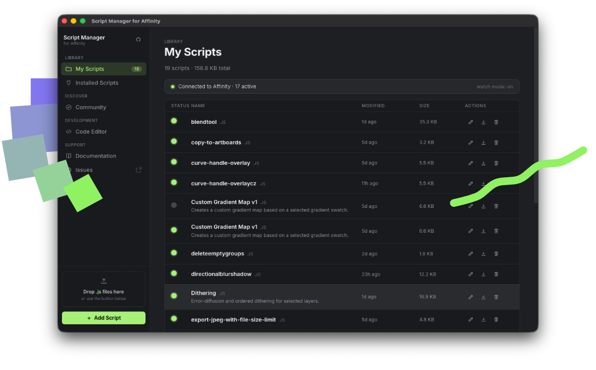

Organize your local library, push scripts to Affinity in one click, write and edit with a built-in code editor, and browse hundreds of community tools.

A complete interface for your Affinity scripting workflow — no terminal required.
Add any creator's GitHub repository to your app with a single paste. The default registry is maintained and open for contributions.
Full Ace editor with JavaScript syntax highlighting. Start from a pre-filled metadata template or fork a community script and adapt it.
The app is unsigned, so macOS needs a one-time permission. Here's how.